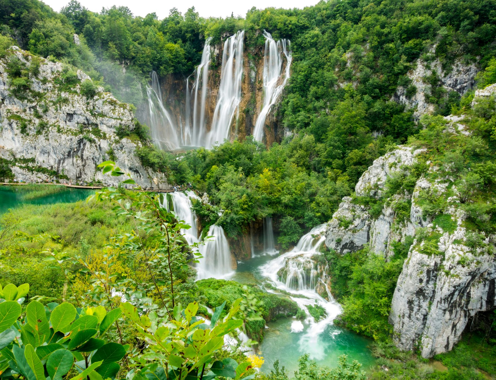
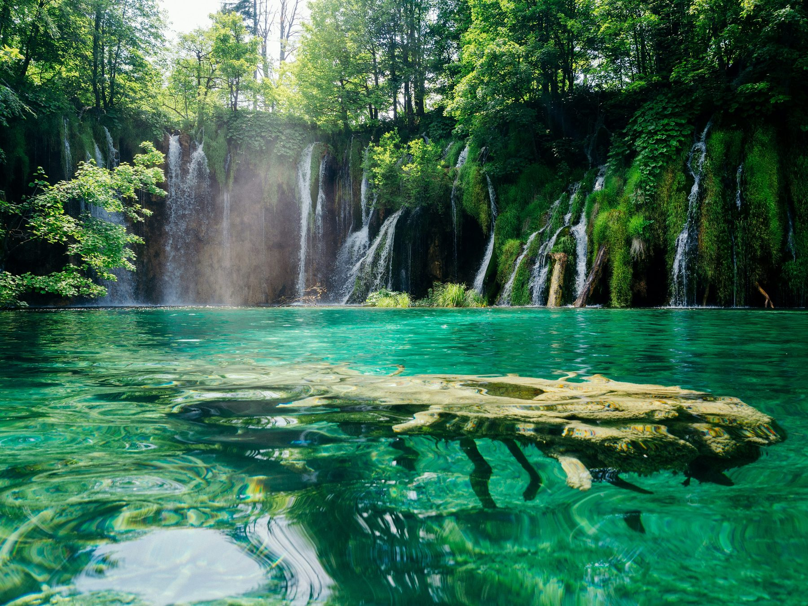
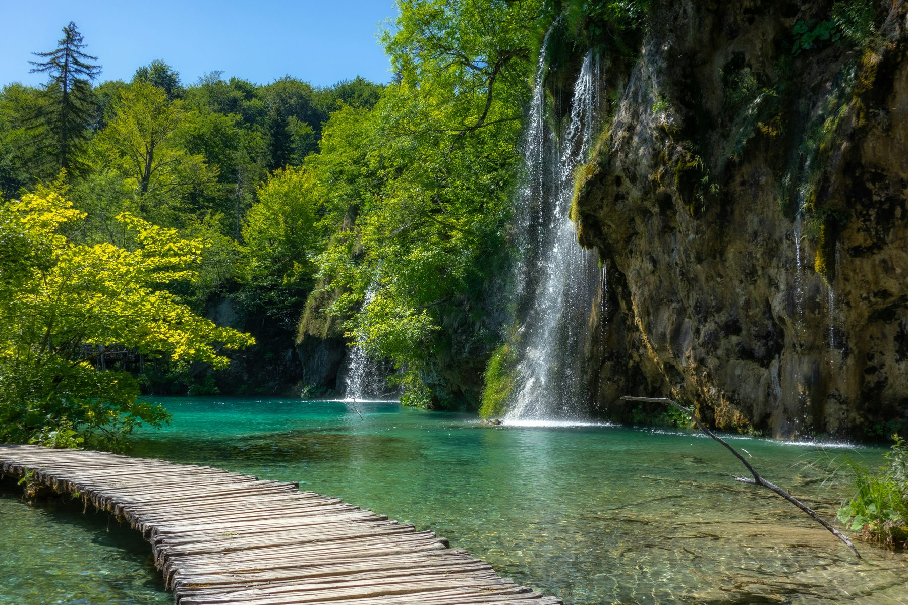
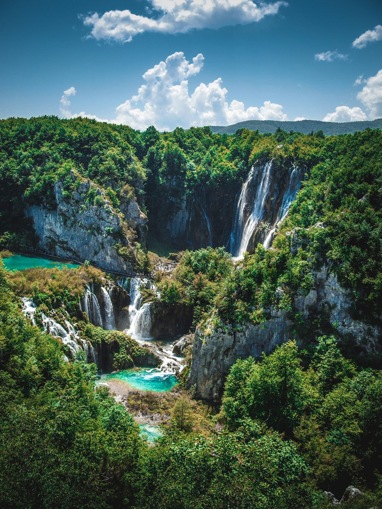

Plitvice Lakes
No. 03 · Croatia · National park · the big inland detour
Sixteen terraced lakes strung together by waterfalls and wooden walkways — Croatia's most famous nature sight, and the one pinned spot from the map list that sits inland.
The water
The colour is the first thing that doesn't photograph honestly: the lakes read green-to-blue depending on angle and minerals, and no filter we've seen matches it. The lakes are dammed by natural tufa barriers that the water is still building — which is why the falls keep rearranging themselves, and why swimming is forbidden. Strictly. The water belongs to the fish and the park rangers, in that order.

The walkways
The classic route runs the lower lakes past Veliki Slap, then the boardwalks along the upper lakes — wooden paths laid right on the water, the photos everyone takes and for once everyone is right to. The electric ferry across Lake Kozjak comes with the ticket and saves a long walk; take it at least once, if only for the view back at the water level.
Trails are lettered Programs A–K, from two hours to a full day. Two routes joined by the boat covers most of what matters without turning it into a forced march.


Know before you go
Tickets are timed-entry and sell out in season — book online days ahead. Big bags aren't allowed on the walkways, and the one-way flow means backtracking costs you real time, so pick your program before you enter. Early entry beats both the crowds and the light; the boardwalks go glassy before the first coaches arrive.
Field note: swimming is forbidden and enforced; the water is the exhibit, not the pool.Field note · Balkans 2027